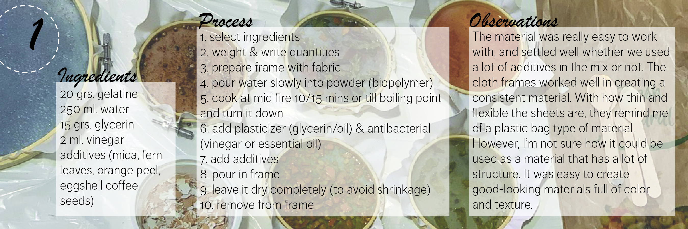
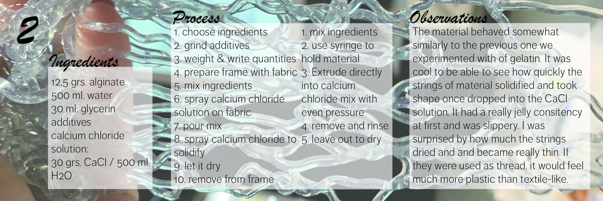
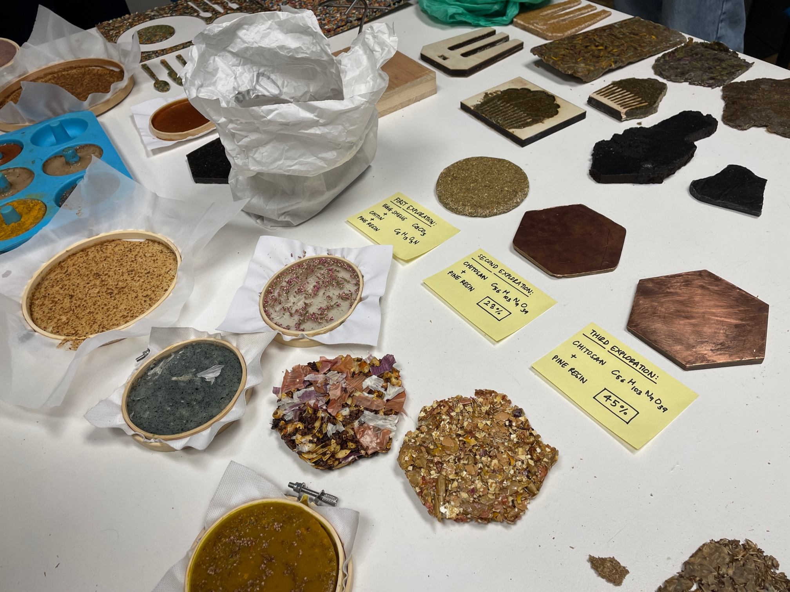

Module 1 20/1 & 27/1
I was extremely excited to start this module led by Lara Campos. I had been waiting to do more in-depth biomaterials practice in the classroom setting. I enjoyed how we got technical information about the ingredients themselves that we were using and their properties.The projects and resources that Lara shared with us were really interesting and inspiring and made me realize again all of the things that could be done with new materials. It reaffirmed to me that I want to continue working in the material context during this masters. I feel it was important that we were asked to think about material properties because so often I am making the materials, but not necessarily thinking about the properties as much as I should be. When I’m making the materials, I need to think about the use, the time frame, lifecycle, and what function it needs to have. The class introduced me to the idea of bottom up material design vs. material driven design and the difference between the two. A material can evoke emotion, be technical, and functional, and that’s what I aim to do with the materials I produce.
In groups, we experimented making materials based on recipes given. I had previously only experimented with agar-agar, glycerine, and starches so I was happy to expand the materials and ingredients. I had been wanting to try using pine resin for a while, working in 3-D rather than flat sheets and see what types of more rigid things could be made that had a little more structure. Extruding the materials into long strings was really fun as I had always seen the jelly-like strings but never knew how they were made. I have to say, I was not super impressed with the way they dried extremely thin. However, I tested their strength and resistance and it was actually quite strong. Seeing the variety of materials my classmates and I all made was wonderful. The table full of colors, materials, and textures proved to me the breadth of materials that could exist. We all really enjoyed using the mica because of its colorful and shiny properties that added depth to the materials. I enjoyed being able to monitor all of the materials laid out on the table to see how they changed and dried over the week. I had only used trays for my own materials but I liked using the frames because they kept the material stretched and they remained largely even. It was fun to be able to have access to so many biomaterial ingredients all in one place and to see the different types of things to be made. I had to question again, however, how can these materials be made useful?
 
Experimentation
In my own material exploration and development, I knew I wanted to continue working with a 3-dimensional product. I wanted to try to create a little vase-like object to hold an air plant as a decorative element. I wanted to see if I could use the pine resin as a clay-like substance in some way, to be able to mold it with my hands into whichever shape I wanted. While attempting to do so in the mold I was using with the baking paper, I realized some limitations that pine resin had which would not allow it to be very useful in shaping. For one, it has to be managed when it is very hot because it dries and settles so quickly. I was kind of burning my fingers while trying to manipulate it into the shape I wanted. As well, pine resin is extremely sticky so it got kind of messy. While I liked using the pine resin and see it as having a lot of applications, I question its use on a big scale because it is not very practical. I also wonder how it could really be sustainable if it were used in large amounts because it is taking it from trees after all. I wanted to use food waste for the exploration with the pine resin so decided to use onion peels and orange rind. While making the mixture, I messed up and added too much food waste and had to adjust the quantities of resin and wax. The recipe I used was as follows: 12 grams onion peel, 45 grams resin, 5 grams carnauba wax, 30 grams orange peel, 15 ml alcohol.
The resulting piece that I made came out slightly better than I had expected, given it was compressed with my hands instead of a mold that it would fit into. It was pretty hard and seemed like it wouldn’t break too easily, but I didn’t want to test that out by breaking it. The next step in the biomaterials exploration for me is finding utility for the materials and thinking more intentionally about what properties I want whatever I’m making to have.
Module 2 3/2 & 10/2
As part of the second module in remixing materials, we got to explore materials in context led by Laura Freixas. I appreciate that the module encouraged us to go out and explore the neighborhood of Poblenou, and see what kind of waste materials we could find. Paula and I went out in the neighborhood after researching a bit on the map to see what types of places might be useful to us as resources for waste material. We talked with some seafood restaurants, one of which seemed helpful. We also went into a butcher shop to ask some questions about their waste. I was surprised to find out that they actually didn’t have too much, and that they used or sold almost all parts of the animal including the bones. Finally, we went to a horchateria called El Tio Che to ask about using waste chufa for our material. The man working there, Raul, was kind enough to give me a tour of the back where they make the horchata, and explain a bit to me how it worked. We obtained a very large (and heavy!) bag of used chufa which I brought back to IAAC so that we could experiment with it. We ended up using the chufa a couple days later, and the bag of it had gotten very warm and started molding on the top. We scraped it off to find clean material to work with and began to test three recipes to try to see what outcomes we could get.

Showcasing our material and seeing what our classmates came up with was very fun. It was interesting to see what could be made from materials gathered in the surrounding area. I particularly enjoyed the ideas for use with the beer spent grain, and flowers from the cemetery.
material reflection
The material, waste chufa (tiger nut), was sourced from a nearby horchateria called El Tio Che on the rambla in Poblenou. The chufa bulbs are squeezed and used to make the drink, and then the remains excreted by the machine are the waste product, which we decided to find a second use for.
The chufa is the tuber of a plant. Because of this, it would theoretically be biodegradable depending on what other materials were added to it. The material is sourced locally in our nearby neighborhood. The chufa that the horchateria obtained was from Alboraia in Valencia so it is all local to spain. The material is a smart choice economically because as it is a waste product, it could be used with little to no cost since most horchateria are throwing it away anyways.
The material fits into a circular economy because first and foremost, it is sourced locally. It is a waste product so no new material is being added when it is being used as the main input into the biomaterials. By using the waste product, it is not allowing the chufa to become waste after being pressed but instead continuing its lifecycle into new products. If it were combined with other natural materials, it could be biodegradable, and therefore would not contribute to more waste.
After doing some experimentation, we saw that the chufa could take a variety of forms and therefore uses. We felt that it could make a really good plant-based leather. It could also be used for tiles, decorative objects, textile, or even a replacement for a wood composite.
We have not found any current industrial processes for chufa, neither for creating nor disposing of the Horchata waste. This means that our processes during the experimentation with the material are very different than the current standards. However, we did follow some basic biomaterial recipes and principles, so our experiments resemble lots of biomaterials typically using starches or other waste.
In order to industrialize the material, the collection process would first have to be streamlined. This means that horchaterias would have to collectively have their material placed or picked up at a collection center. This would be easiest in places where there are a lot of horchaterias, but with a single one in Poblenou it would not make sense to try to industrialize it from that location. The material would also have to work in a system where it could be dried quickly and in large quantities, removing any excess water from it as fast as possible so that it does not start to ferment or develop mold. The chufa came to us pre-ground, but ideally would have to be ground to a fine powder in order to create more even, uniform materials.